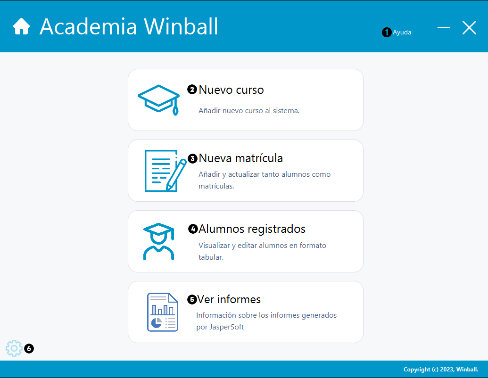
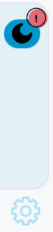

Ayuda inicio
Sección inicial de la aplicación.

Información a tener en cuenta:
- Ayuda. Se nos abrira la ventana de ayuda de Winball, donde podremos acceder a todas las ayudas de las diversas categorias.
- Nuevo curso. Podremos acceder a la gestión para ingresar un nuevo curso, el proceso esta explicado en curso.
- Nueva matrícula. Podremos acceder a la gestion de las matriculas del alumnados, con posibilidad de ingresar en un curso o en varios cursos, se encuentra todo explicado en matricula.
- Alumnos registrados. Podremos visualizar todos los alumnos registrados, con posibilidad de editar/añadir y eliminar una vez que hayamos seguidos los pasos de curso y matricula.
- Ver informes. Se nos abrira una pequeña ventana en el centro de la aplicación, toda sus funcionalidades se encuentra explicado en informes
- Ajustes. Se nos abrira en la parte lateral izquierda,un pequeño rectangulo con posibilidad, incluyendo dentro un boton para alternar entre el modo oscuro y claro, como se puede observar en la imagegn inferior.
